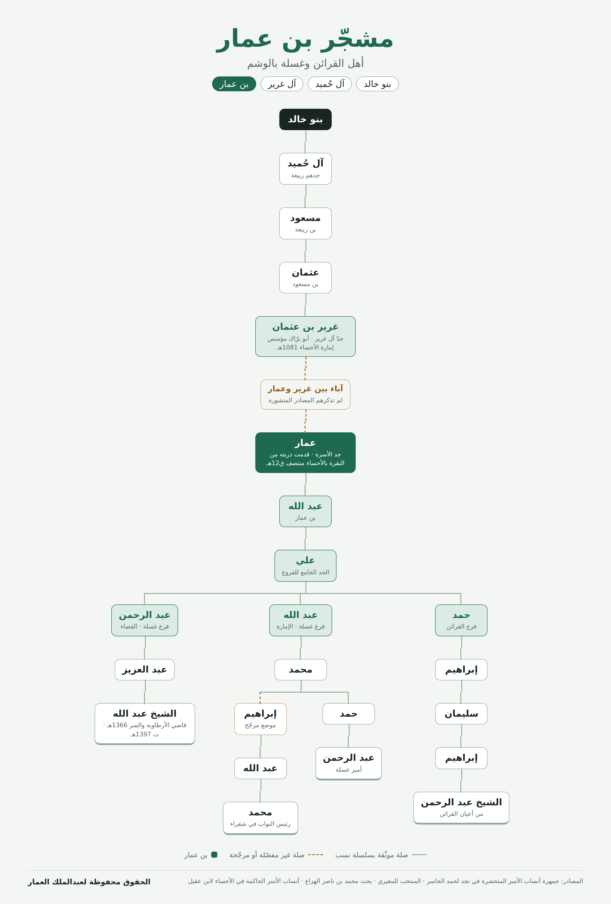

بن عمار أسرة نجدية من حاضرة الوشم، أهل القرائن وغسلة. ينصّ حمد الجاسر في جمهرة أنساب الأسر المتحضرة على أنهم من آل غرير، الفخذ الرئيس في آل حُميد (بضم الحاء) من بني خالد، وهو الفخذ الذي حكم الأحساء بين 1081 و1211هـ. هذه الصفحة تجمع ما وثّقته الكتب والأبحاث المنشورة، وتفصل بين الموثّق وما لم يُعثر على سنده بعد.
على الجوال: اضغط مطولًا على الصورة لنسخها أو حفظها. على الكمبيوتر: زر الفأرة الأيمن ثم «نسخ الصورة».

ثلاث سلاسل منشورة تلتقي كلها عند علي بن عبد الله بن عمار، فرسمتها فروعًا لأبنائه الثلاثة. الأسماء الحديثة مذكورة كما وردت في بحث ابن هزاع، وقد تكون أحوالهم تغيّرت بعد نشره.
ورد نسب رئيس النواب في شقراء هكذا: محمد بن عبد الله بن إبراهيم بن محمد بن عبد الله العمار. الأرجح أن «محمد بن عبد الله» في هذه السلسلة هو نفسه محمد بن عبد الله بن علي في فرع غسلة، لسببين: الاسمان متطابقان في موضعهما، وبهذا الربط يقع محمد في الجيل السابع من عمار، وهو جيل الشيخ عبد الرحمن بن إبراهيم من فرع القرائن الذي عاصره في البحث نفسه. رسمت الصلة متقطعة في الشجرة أعلاه، ويبقى تأكيدها بشهادة كبار الأسرة أو بوثيقة.
الخانتان المتقطعتان هما موضع الربط المرجّح.
أعلى السلسلة من كتاب المنتخب للمغيري، وأسماء الحكّام وتواريخهم منه ومن تراجم الأمراء. أبناء غرير الستة من ابن بشر وابن عيسى كما نقلهم الجاسر وابن عقيل. يذكر المغيري والجاسر آل عمار في بيوت غرير، دون أن يحدد أحدهما ابنًا بعينه من أبنائه يتصلون به، فرسمت الصلة متقطعة.
برّاك بن غرير يُخرج الحامية العثمانية من الأحساء والقطيف بمشاركة حسين بن عثمان، وتقوم إمارة آل حُميد.
وفاة برّاك وتولي أخيه محمد بن غرير، الذي ثبّت أركان الإمارة ووزّع الأملاك على فروع بني خالد.
عهد سعدون بن محمد، ذروة اتساع نفوذ بني خالد من الأحساء إلى نجد وأطراف الشام.
نزاع على الرئاسة بين أبناء محمد بن غرير وحفيده دجين. يتولى علي ثم سليمان، ثم يُخرَج سليمان فيموت في الخرج سنة 1166هـ، ويستقر الأمر لعريعر بن دجين.
بن عمار وآل راشد يخرجون من النقرة بالأحساء إلى القصب ثم يستقرون في القرائن. يتزامن ذلك مع اضطراب الرئاسة في آل حُميد، وهذا ربط زمني مني لا تنص عليه المصادر.
آخر حكّام الإمارة الأولى برّاك بن عبد المحسن، وتنتهي بدخول الأحساء في الدولة السعودية الأولى.
الإمام تركي بن عبد الله ينتزع الأحساء من آخر ولاة آل عريعر.
الملك عبد العزيز يعيّن الشيخ عبد الله بن عبد العزيز بن عبد الرحمن بن علي بن عبد الله بن عمار قاضيًا في هجرة الأرطاوية، ثم قاضيًا لمدن وقرى منطقة السر.
وفاة الشيخ عبد الله بن عبد العزيز، قاضي منطقة السر، رحمه الله.
اجتماع أسرة بن عمار في نفود الشرقي (عرق البلدان)، وللأسرة اجتماع سنوي منظّم في القرائن.
الاسم مشترك بين أسر لا صلة نسب بينها، وخلطها هو أكثر ما يُفسد المشجّرات. هذه هي الأسر التي ظهرت في المصادر أثناء البحث:
من العيينة ثم ثادق وحريملاء والرياض، وتنسب نفسها إلى العناقر من بني تميم. جدها عمار عاش في القرن 11هـ. نشرت عنها صحيفة الجزيرة سنة 1430هـ، ونفت أسرة العنقري انتسابها إليها.
في سيح الأفلاج، من آل حسن بن صهيب من الدواسر، وفروعهم آل حامد وآل سعد وآل مانع وآل مبارك.
من آل ذويب من المسعود من الأسلم من شمر.
العمار في الخرج والدمام من الشبلة، والعمار (الفقعان) في الجبيل من الرازن. يجمعهم ببن عمار اسم القبيلة لا الفخذ.
مادة «آل عمار في الوشم» تنصّ على أنهم من آل غرير من آل حميد من بني خالد، وتحيل إلى مجلة العرب وتاريخ شقراء. وفيها أن السباعا في الوشم من آل غرير، وأبناء غرير الستة نقلًا عن ابن بشر. وتجعل آل راشد في القرائن من المشارفة من تميم، خلافًا لابن هزاع، فقد تكون أسرتين بالاسم نفسه.
نسخة أرشيف الإنترنتكتاب مطبوع. منه أعلى السلسلة (ربيعة ← مسعود ← عثمان ← غرير)، وأسماء الحكّام، ونصّه على أن آل عمار أهل القرائن من بيوت غرير.
المكتبة الشاملة، ص46منه سلاسل نسب بن عمار الثلاث، وقدومهم من النقرة، وصلتهم بآل راشد. نُقل عبر منتديات القبيلة، ونبّه بعض المعلّقين إلى أخطاء فيه.
منتديات آل عريعرمدونة الخوالديفصّل حكّام آل حميد، ويحيل إلى مجلة العرب في ذكر «آل فاضل وآل عمار في الوشم»، لكنه لا يسرد الآباء بين غرير وعمار. ويرجّح أن بني خالد من طيء وجذام.
نسخة أرشيف الإنترنتسنوات حكم برّاك ومحمد وسعدون، والرواية البديلة «سعدون» بدل «مسعود» في نسب عثمان.
موسوعة المعرفةأرابيكااجتماعات الأسرة منشورة في صحيفة شقراء ويوتيوب. ويذكر منتدى أن وسم بن عمار من حاضرة القرائن «مطرقين وحلقة على الرقبة من اليمين»، وهو مشترك مع أسر أخرى من غير آل حُميد، فلا يُعتمد عليه في النسب.
صحيفة شقراء